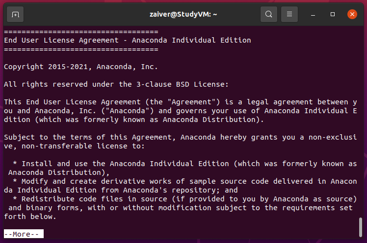
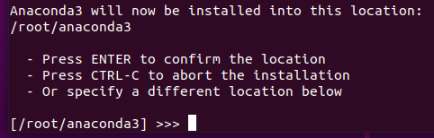
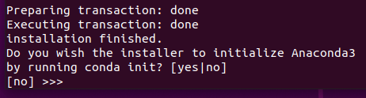

1. 학습 및 컴파일 환경
1.1. OS 설치
Ubuntu 20.04 버전을 설치합니다. 설치가이드는
* https://ubuntu.com/tutorials/install-ubuntu-desktop#1-overview
를 참조합니다.
1.2. 학습 환경 구성
1.2.1. 아나콘다 설치
- 파일 준비
- Anaconda3-2021.05-Linux-x86_64.sh
- yolov5_retraining.ipynb
- data.yaml
- 의존성 설치 실행된 가상환경에서 Yolov5 모델을 커스텀 데이터셋으로 학습하기위해 필요한 파일을 구성합니다. 필요한 라이브러리 먼저 설치를 진행합니다.
sudo apt-get install Net-tools git libxcb-xinerama0
- Anaconda 설치
sudo bash Anaconda3-2021.05-Linux-x86_64.sh
설치 과정
- 라이선스 확인 라이선스 확인은 q를 눌러 넘기고 yes를 입력합니다. 
- 저장경로 설정 저장 경로를 지정합니다. 기본 경로는 /root/anaconda3 입니다. 
- Root 계정 conda init 여부 Root 계정도 conda init을 할것인지 물어보는 부분이며 yes / no 상관없습니다. 
Anaconda 설정
# conda 기본 경로이며 변경한 경우 변경된 path로 지정해야 합니다.
source /root/anaconda3/bin/activate
conda init
source ~/.bashrc
# conda 환경을 자동으로 활성화하는 옵션입니다.
conda config –-set auto_activate_base {True or False}
conda create -n yolov5 python=3.9
conda activate yolov5
conda install jupyter
mkdir yolov5_workspace
- 학습을 위한 파일 복사
설정에서 만든 yolov5_workspace 폴더로 이동 후 아래 두 파일을 복사합니다.
- yolov5_retraining.ipynb
- data.yaml
cd yolov5_workspace
# 파일들이 ~/Downloads에 있다고 가정
cp ~/Downloads/yolov5_retraining.ipynb .
cp ~/Downloads/data.yaml .
- 실행
Jupyter notebook
위 명령어를 실행하면 아래 같은 화면이 출력됩니다.

1.2.2. Yolov5 설치
설치는 Jupyter 파일에 학습과 함께 구성되어 있습니다. 시작하기 섹션의 학습가이드와 함께 안내합니다.
1.3. 컴파일 환경 구성
1.3.1. Docker 설치
Ubuntu 설치 완료 후
- Terminal 실행
- apt repository 업데이트
sudo apt-get update
- Docker's official GPG key 추가
sudo apt-get install ca-certificates curl gnupg
sudo install -m 0755 -d /etc/apt/keyrings
curl -fsSL https://download.docker.com/linux/ubuntu/gpg | sudo gpg --dearmor -o /etc/apt/keyrings/docker.gpg
sudo chmod a+r /etc/apt/keyrings/docker.gpg
- Docker repository를 APT sources에 추가
echo "deb [arch="$(dpkg --print-architecture)" signed-by=/etc/apt/keyrings/docker.gpg] https://download.docker.com/linux/ubuntu "$(. /etc/os-release && echo "$VERSION_CODENAME")" stable" | sudo tee /etc/apt/sources.list.d/docker.list > /dev/null
sudo apt-get update
- Docker packages 설치
sudo apt-get install docker-ce docker-ce-cli containerd.io docker-buildx-plugin docker-compose-plugin
- Docker 테스트
sudo docker images
1.3.2. Docker 환경 설정
- Docker 권한 부여
sudo usermod -aG docker ${USER}
# Docker.sock permission 오류가 나는 경우 아래 명령 입력 후, 계정 로그아웃 및 재로그인 필요
sudo chmod 666 /var/run/docker.sock
- GPU가 있는 경우, GPU 가상화를 위한 nvidia-docker2, nvidia-container-toolkit 설치
distribution=$(. /etc/os-release;echo $ID$VERSION_ID) && curl -s -L https://nvidia.github.io/nvidia-docker/gpgkey | sudo apt-key add - && curl -s -L https://nvidia.github.io/nvidia-docker/$distribution/nvidia-docker.list | sudo tee /etc/apt/sources.list.d/nvidia-docker.list
sudo apt-get update
sudo apt-get install -y nvidia-docker2 nvidia-container-toolkit
sudo systemctl restart docker
1.3.3. Hailo SW Suite 설치
압축해제 (파일은 상단, 학습환경 Section에 링크되어 있으며, 용량이 약 9GB 정도 되므로, 사양에 따라 압축해제 시간이 오래 걸릴 수 있습니다.)
unzip hailo_sw_suite_2023-07.1_docker.zipDocker_run.sh 실행
./hailo_sw_suite_docker_run.shDocker 재접속 명령어
./hailo_sw_suite_docker_run.sh --resume